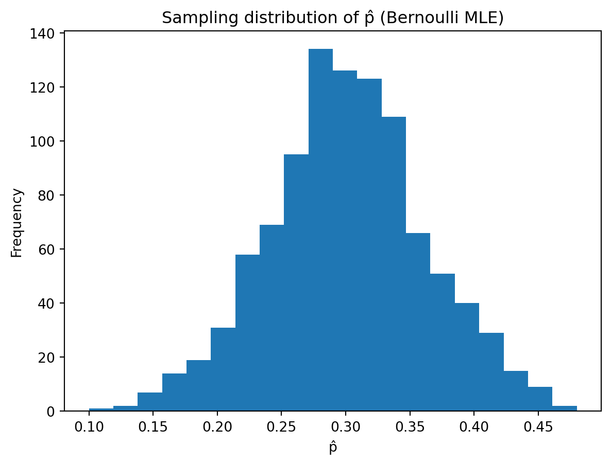

Estimator \(\hat{mu}_1 = \bar{X}\) appears to be unbiased as its average across simulations is very close to 0.5.
Estimator \(\hat{\mu}_2 = \frac{n+1}{n}\bar{X}\) tends to overestimate the true mean as its expected value is 0.55, so it consistently overshoots.
Simulation allows us to:
Empirically estimate the bias of each estimator.
Compare variability (MSE, variance).
Visualise sampling distributions.
Understand estimator behaviour without relying solely on algebra.
Exercise 3: MLE for the Bernoulli
Suppose \(X_i \sim \text{Bernoulli}(p)\).
Simulate \(n = 50\) Bernoulli observations with \(p = 0.3\).
Compute the maximum likelihood estimator.
Repeat this simulation 1000 times and record the estimates.
Questions:
Plot a histogram of the 1000 estimates.
What is the mean of the simulated estimates?
Does the estimator appear to be unbiased?
B =1000n =50p =0.3samples = np.random.binomial(1, p, size=(B, n))p_hat = samples.mean(axis=1)# Histogramplt.hist(p_hat, bins=20)plt.title("Sampling distribution of p̂ (Bernoulli MLE)")plt.xlabel("p̂")plt.ylabel("Frequency")plt.show()print("Mean of p̂:", np.mean(p_hat)) # should be close to 0.3print("SD of p̂:", np.std(p_hat, ddof=1)) # variability (sample SD like R)

Mean of p̂: 0.30196
SD of p̂: 0.06451294692013627
The histogram looks approximately normal and centred near 0.3.
Mean of the estimates is very close to 0.3.
The estimator appears unbiased as simulation confirms \(E[\hat{p}]=p\).
Exercise 4: MLE for Normal Distribution (Exam-style)
Suppose
\[
X_i \sim N(\mu, \sigma^2),
\]
where \(\sigma^2\) is known.
Write down the likelihood function \(L(\mu)\).
Derive the log-likelihood function.
Show that the maximum likelihood estimator of \(\mu\) is \(\bar{X}.\)
Simulate \(n=40\) observations from \(N(5,1)\)
Compute the MLE of \(\mu\).
Repeat the simulation 1000 times and plot the distribution of the estimates.
Questions:
What is the mean of the simulated estimates?
What does this suggest about the estimator?
How does the variability change if the sample size increases?
The empirical mean of the \(1000\) estimates is \[
\overline{\hat{\mu}}
= \frac{1}{1000}\sum_{b=1}^{1000} \hat{\mu}^{(b)}.
\] In large simulations, this will be very close to the true value \(5\).
What does this suggest about the estimator?
Since the average of the simulated MLEs is close to \(5\), this suggests that \[
E[\hat{\mu}] = \mu,
\]
i.e. \(\hat{\mu} = \bar{X}\) is an unbiased estimator of \(\mu\).
Effect of increasing the sample size on variability.
The variance of \(\bar{X}\) is \[
\operatorname{Var}(\bar{X}) = \frac{\sigma^2}{n}.
\]
As \(n\) increases, \(\operatorname{Var}(\bar{X})\) decreases, so the sampling distribution of \(\hat{\mu}\) becomes more concentrated around \(\mu\). In simulation, this appears as a histogram that is more tightly clustered around \(5\) when \(n\) is larger (e.g. \(n=100\) vs. \(n=40\)).
Exercise 5: Confidence Interval for a Mean
Suppose the true distribution is Normal with
\[
\mu = 10, \quad \sigma = 2.
\]
Simulate a sample of size \(n = 40\).
Compute the sample mean \(\bar{X}\).
Construct a 95% confidence interval.
Questions:
Does the interval contain the true mean \(\mu = 10\)?
Repeat the experiment 1000 times and record whether the interval contains the true mean.
Compute the proportion of intervals that contain the true mean.
Is this proportion close to 0.95?
What does this illustrate about confidence intervals?
import numpy as npimport matplotlib.pyplot as pltfrom statistics import NormalDistnp.random.seed(123)# Known parametersmu_true =10sigma =2n =40# 1. Simulate one samplex = np.random.normal(loc=mu_true, scale=sigma, size=n)# 2. Sample meanxbar = np.mean(x)# 3. 95% confidence interval (sigma known)z = NormalDist().inv_cdf(0.975)se = sigma / np.sqrt(n)CI_lower = xbar - z * seCI_upper = xbar + z * seprint((CI_lower, CI_upper))# a. Does the interval contain the true mean?contains_mu = (mu_true >= CI_lower) and (mu_true <= CI_upper)print(contains_mu)# b. Repetition for 1000 simulationsB =1000contains = np.zeros(B, dtype=bool)for b inrange(B): x = np.random.normal(loc=mu_true, scale=sigma, size=n) xbar = np.mean(x) CI_lower = xbar - z * se CI_upper = xbar + z * se contains[b] = (mu_true >= CI_lower) and (mu_true <= CI_upper)# (b)–(c) Proportion of intervals containing the true meanprop_contains = np.mean(contains)print(prop_contains) # should be close to 0.95# Optional: visualise sampling variability of xbarxbars = [np.mean(np.random.normal(mu_true, sigma, n)) for _ inrange(B)]plt.hist(xbars, bins=30)plt.title("Sampling Distribution of x̄ (n = 40)")plt.xlabel("x̄")plt.ylabel("Frequency")plt.show()
This simulation illustrates the frequentist coverage interpretation of confidence intervals:
A single 95% confidence interval does not guarantee that it contains the true mean.
However, if we repeatedly sample from the population and construct a 95% confidence interval each time, then approximately 95% of those intervals will contain the true parameter \(\mu\).
Thus, the 95% refers to the long-run proportion of intervals that cover the true parameter, not to a probability statement about any one specific interval.
Part 2: Bayesian inference
Exercise 6: Bayes Theorem
Suppose a test is 95% accurate when a disease is present and 97% accurate when the disease is absent. Suppose that 1% of the population has the disease. Let \(H\) be the event that a disease is present, \(T^+\) be the event of positive test result, and \(T^-\) be the event of negative test result.
Draw a tree diagram or probability table to visualise the conditional probabilities
flowchart LR
A[Start] --> B{H: Disease?}
B -->|Yes 1%| C[H]
B -->|No 99%| D[∼H]
C -->|Test Positive 95%| E[T+ ∣ H]
C -->|Test Negative 5%| F[T- ∣ H]
D -->|Test Positive 3%| G[T+ ∣ ∼H]
D -->|Test Negative 97%| K[T- ∣ ∼H]
linkStyle default stroke:#000,stroke-width:2px
\[
P(\neg H \mid T^-) \approx \frac{0.9603}{0.9608} \approx 0.9995
\]
True negative probability ≈ 99.95%
False negative probability \(P(H \mid T^-)\)
\[
P(H \mid T^-) = 1 - P(\neg H \mid T^-)
\]
\[
= 1 - 0.9995 = 0.0005
\]
False negative probability ≈ 0.05%
Exercise 7: Bayesian Estimate
(Albert et al., 2009, Chapter 4, Exercise 4.4)
A woman tells you she can predict the sex of a baby by how high it ‘rides’ in the mothers uterus. ‘High’ means a boy and ‘low’ means a girl. You suspect she is only guessing, but you are not completely sure;
Place a prior distribution on the values of her success rate (\(p\)) in the table below that reflects this belief that she is probably just guessing.
You conduct an experiment with 10 pregnant women, and the woman is correct 7 times out of 10 in predicting the sex of the unborn baby. Update your probabilities in the table.
With a flat prior, the same data makes “some skill” the more plausible story.
Important
Same likelihood, different priors → different posterior stories.
Exercise 8: Conjugate Prior
Suppose the number of customers arriving at a service desk in one hour follows a Poisson distribution with unknown rate \(\lambda\):
\[
X_i \sim \text{Poisson}(\lambda), \quad i = 1, \dots, n.
\]
A prior distribution is placed on \(\lambda\):
\[
\lambda \sim \text{Gamma}(\alpha, \beta),
\]
where \(\alpha > 0\) and \(\beta > 0\).
Assume the prior parameters are
\[
\alpha = 3, \qquad \beta = 1.
\]
During five observed hours, the number of arriving customers is recorded as
\[
8,\; 6,\; 7,\; 9,\; 10.
\]
Questions:
Write down the likelihood function for \(\lambda\) based on the observed data.
Using the conjugacy of the Gamma prior with the Poisson likelihood, determine the posterior distribution of \(\lambda\). Specify the updated parameters of the Gamma distribution.
Compute the posterior mean of \(\lambda\).
Find the maximum likelihood estimator (MLE) of \(\lambda\) based on the observed data. Compare the MLE with the posterior mean and briefly comment on the difference.
Using statistical software (R or Python), compute a 95% credible interval for \(\lambda\) from the posterior distribution.
Hint:
For the Gamma distribution parameterised as \(\text{Gamma}(\alpha, \beta)\) with shape \(\alpha\) and rate \(\beta\): \[
E[\lambda] = \frac{\alpha}{\beta}.
\]
For the Gamma–Poisson conjugate model, the posterior parameters are
\[
\alpha_{\text{post}} = \alpha + \sum x_i,
\]
\[
\beta_{\text{post}} = \beta + n.
\]
Likelihood function
Given data \(x_1, \dots, x_n\) with \(x_i \sim \text{Poisson}(\lambda)\) independently, the likelihood is \[
L(\lambda \mid x_1,\dots,x_n)
= \prod_{i=1}^n \frac{e^{-\lambda}\lambda^{x_i}}{x_i!}
= e^{-n\lambda}\lambda^{\sum_{i=1}^n x_i} \prod_{i=1}^n \frac{1}{x_i!}.
\]
For the specific data \(8,6,7,9,10\) with \(n=5\) and \(\sum x_i = 40\), \[
L(\lambda \mid \mathbf{x}) \propto e^{-5\lambda}\lambda^{40}.
\]
Posterior distribution
Prior: \(\lambda \sim \text{Gamma}(\alpha,\beta)\) with \(\alpha=3\), \(\beta=1\).
The posterior mean is shrunk toward the prior mean \[
E[\lambda] = \frac{\alpha}{\beta} = \frac{3}{1} = 3,
\] reflecting prior information plus data, whereas the MLE uses only the data.
This returns a 95% credible interval of the form \[
[\lambda_{0.025},\; \lambda_{0.975}] = [5.1866, 9.4620].
\]
Extra Exercises
Let \(X_1, X_2, \dots, X_n\) have a joint density function \(f(X_1, X_2, \dots, X_n \mid \theta)\). Given \(X_1 = x_1, X_2 = x_2, \dots, X_n = x_n\) is observed, the function of \(\theta\) defined by
In the following questions you are asked to specify the likelihood functions for given scenarios.
A coin is flipped 100 times. Given that there were 55 heads, specify the likelihood function for \(\theta\), the probability of heads on a single toss.
Consider the distribution \(\text{Multinomial}(n = 6, \theta, \theta, 1 - 2\theta)\). The following two samples are drawn from this distribution: \(X = (1,3,2)\) and \(X = (2,2,2)\). Specify the likelihood function for each sample and compare them.
An actuary has been advised to use the following claim size distribution as a model for a particular type of claim, with claim sizes measured in units of A$100,
Consider a sample of 1000 motor insurance policies. We assume that the annual total claim amounts per policy are independent and identically distributed. We denote by \(X\) the number of policies with a total amount of over A$5000 claimed in a calendar year, and assume that \(X\) has a Binomial distribution with parameters \(n = 1000\) and \(p\). An analyst wishes to estimate the unknown proportion \(p\) of claims with amount greater than A$5000 per year.
Derive the maximum likelihood estimator for \(p\).
Derive the Bayesian estimator of \(p\) under quadratic loss assuming that the prior distribution of \(p\) is beta with parameters \(\alpha\) and \(\beta\) respectively.
Comment on the relationship between the prior distribution and the posterior distribution of \(p\) obtained in (b).
Conjugate prior, same form of prior and posterior distribution.
Assume that 50 out of 1000 policies in an actual sample have a total claim amount of over A$5000.
Estimate \(p\) using the MLE. \[
\hat{p} = 50/1000 = 0.05
\]
Estimate \(p\) using the Bayesian estimator under quadratic loss, given that the parameters of the beta prior distribution are \(\alpha = 2\) and \(\beta = 2\) respectively. \[
\hat{p} = (50+2)/(1000+4) = 0.0518
\]
Comment on the difference between the values estimated in MLE and Bayesian Estimate.
The two estimators are the same.
While travelling through the Mushroom Kingdom, Mario and Luigi find some rather unusual coins. They agree on a prior of \(f(\theta) \sim \text{Beta}(5,5)\) for the probability of heads, though they disagree on what experiment to run to investigate \(\theta\) further.
Mario decides to flip a coin 5 times. He gets four heads in five flips.
Luigi decides to flip a coin until the first tails. He gets four heads before the first tail.
Show that Mario and Luigi will arrive at the same posterior on \(\theta\), and calculate this posterior.